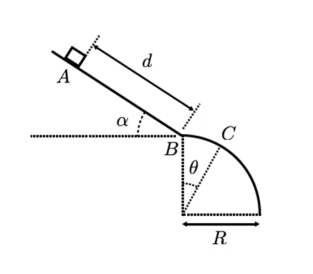
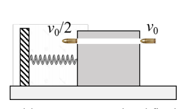
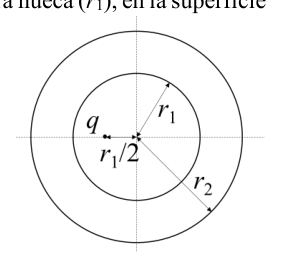
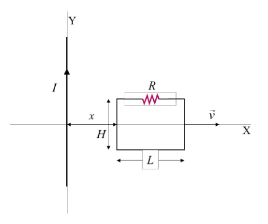
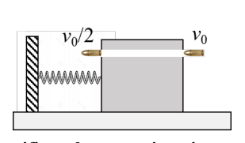
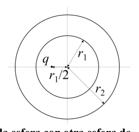
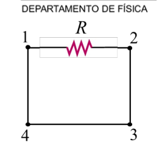
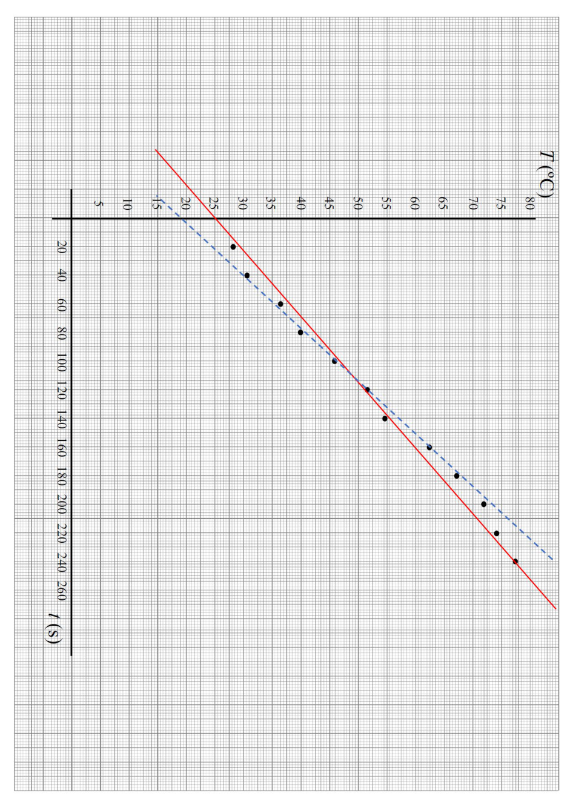

Fonte: gare di altri paesi/Spagna/Jaen/2025 Examen resuelto.pdf · Apri PDF · apri PDF p.1
Cluster: Termodinamica
Problema 1
- Un bloque desciende, partiendo del reposo (punto A), por un plano inclinado un ángulo respecto a la horizontal. El coeficiente de rozamiento entre el plano y el bloque es (el mismo valor para el estático y el dinámico). Suponga que el valor de es tal que cuando se abandona el bloque en A éste empieza a descender. Al descender por el plano inclinado, el bloque termina en la parte superior de un casquete esférico, sin rozamiento, de radio R (punto B; suponga que la transición entre el plano y el casquete es suave y no se pierde energía en la misma). Al descender por el casquete esférico, el bloque pierde contacto con él en el punto C de la figura. (a) Demuestre que la distancia recorrida por el bloque sobre el plano inclinado viene dada por:
( ) ( ) 3cos( ) 2 2 sin( ) cos( ) R d
(b) Utilizando la expresión del apartado anterior, calcule la distancia recorrida en el plano inclinado cuando = 30o, = 0,15, R = 2m y = 55o y analice el resultado obtenido.

blocco su piano inclinato con sferaTopic: Newtonian Mechanics, Conservation of Energy Metodi: Free-Body Diagram, Energy Conservation Method, Conservation of Energy Competenze: Physical Reasoning, Mathematical Modeling Fonte: Testo (PDF) — p.1
Problema 2
- Sobre el bloque de la figura, de 1 kg de masa, se dispara paralelamente al plano una bala de 20 g que atraviesa el bloque saliendo con la mitad de la velocidad que llevaba antes del choque. Si la constante del resorte es de 2 N/cm y éste llega a contraerse 12 cm, calcular la velocidad de la bala justamente antes del choque, así como la del bloque inmediatamente después del mismo, suponiendo que el coeficiente de rozamiento del bloque con el plano es 0,3. Justifique las aproximaciones realizadas en el problema y compruebe al final del mismo que dichas aproximaciones son consistentes con los resultados obtenidos.

blocco con molla e proiettileTopic: Conservation of Momentum, Conservation of Energy Metodi: Conservation of Momentum, Impulse-Momentum Theorem, Energy Conservation Method Competenze: Physical Reasoning, Estimation & Approximation Fonte: Testo (PDF) — p.1
Problema 3
- Un conductor es un material que, aunque es globalmente electroneutro, contiene cargas que pueden moverse libremente a lo largo de la estructura cristalina del mismo. Cuando a un material conductor se le aplica un campo eléctrico externo las cargas libres que tiene se mueven hacia su superficie anulando el campo eléctrico en el interior del conductor. Se dispone de una esfera hueca conductora de radio interior r1 y radio exterior r2 sin carga neta. Dentro de la esfera se sitúa una carga puntual q tal y como se muestra en la figura. (a) Razone cual sería la carga neta situada en la superficie interna de la esfera hueca (r1), en la superficie externa (r2) y dentro de la esfera. (b) Calcule el campo eléctrico fuera de la esfera conductora y entre r1 y r2. Comente que ocurriría con el campo eléctrico en la oquedad (r < r1). (c) Tomando como origen de potencial eléctrico el infinito, calcule el potencial eléctrico fuera de la esfera conductora y entre r1 y r2. (d) Si conectamos mediante un hilo conductor de tamaño despreciable la esfera con otra esfera de radio 2r2 y carga inicial 4q ¿qué ocurriría con la carga de ambas esferas? ¿y con su potencial? Suponga que ambas esferas están suficientemente alejadas para que la interacción electrostática entre ambas sea despreciable.

sfera conduttrice cava con carica qTopic: Electrostatics Metodi: Gauss’s Law, Electric Potential Method, Coulomb’s Law Competenze: Physical Reasoning, Mathematical Modeling Fonte: Testo (PDF) — p.1
Problema 4
- Disponemos de una espira rectangular de base L, altura H y resistencia R situada sobre el plano XY que se desplaza con una velocidad constante v en el sentido positivo del eje X. Por otro lado, en el eje Y, se sitúa un cable conductor infinito por el que circula una corriente I (figura). Si en el instante inicial la espira ocupa la posición x0 calcule: (a) el sentido y la intensidad de la corriente eléctrica inducida sobre la espira. (b) la fuerza que es necesario hacer sobre la espira.

spira rettangolare con resistenza in campo magneticoTopic: Electromagnetic Induction, Magnetism Metodi: Faraday’s Law of Induction, Biot-Savart Law, Lenz’s Law Competenze: Mathematical Modeling, Diagrammatic Reasoning Fonte: Testo (PDF) — p.2
Problema 5
- La energía, dE, o calor, dQ, que es necesario darle a un sistema para que sufra una variación de temperatura viene dada por la expresión:
dQ dE m c T
=
donde m es la masa que tiene el cuerpo y c es el calor específico por unidad de masa del material.
Para determinar el calor específico del agua se introduce una masa de agua M = 250 g en un calorímetro. En el interior del calorímetro hay una resistencia eléctrica que permite calentar el agua con una potencia constante P = 250 W. Suponga que el calorímetro no absorbe calor y que no hay flujo de calor hacia el exterior. En la tabla siguiente se muestra la temperatura del agua, T, para distintos instantes de tiempo, t, (contados desde que la resistencia entra en funcionamiento).
(a) Represente, en papel milimetrado, la temperatura (en el eje vertical, utilizando una escala de 5oC por centímetro y empezando la representación en 0oC) frente al tiempo (en el eje horizontal, utilizando una escala de 20 s por centímetro y empezando en 0 s). No olvide incluir en los ejes las magnitudes que se están representado (con sus unidades). (b) Trace la recta que, según su valoración, mejor se ajusta a la nube de puntos (no es necesario hacer un ajuste utilizando el método de mínimos cuadrados). (c) Utilizando la recta trazada, obtenga el calor específico del agua (expréselo en cal/(g oC)) y la temperatura del agua en el instante en el que se empezó a contar el tiempo (en oC). (d) Haga una estimación de las incertidumbres con que se han determinado los parámetros calculados en el apartado anterior.
Dato: 1 cal = 4,18 J SOLUCIONES Equation Section (Next)
Topic: Thermodynamics Metodi: Experimental Data Analysis, Graph Linearization, First Law of Thermodynamics Competenze: Experimental Data Analysis, Graph Linearization, Error Propagation Fonte: Testo (PDF) — p.2
Problema 6
- Un bloque desciende, partiendo del reposo (punto A), por un plano inclinado un ángulo respecto a la horizontal. El coeficiente de rozamiento entre el plano y el bloque es (el mismo valor para el estático y el dinámico). Suponga que el valor de es tal que cuando se abandona el bloque en A éste empieza a descender. Al descender por el plano inclinado, el bloque termina en la parte superior de un casquete esférico, sin rozamiento, de radio R (punto B; suponga que la transición entre el plano y el casquete es suave y no se pierde energía en la misma). Al descender por el casquete esférico, el bloque pierde contacto con él en el punto C de la figura. (a) Demuestre que la distancia recorrida por el bloque sobre el plano inclinado viene dada por:
( ) ( ) 3cos( ) 2 2 sin( ) cos( ) R d
(b) Utilizando la expresión del apartado anterior, calcule la distancia recorrida en el plano inclinado cuando = 30o, = 0,15, R = 2m y = 55o y analice el resultado obtenido.
Aplicando la segunda ley de Newton en el punto C llegamos a:
P N ma +
(1.1)
Si nos fijamos sólo en la dirección normal a la superficie esférica obtenemos:
2 2 cos( ) cos( ) C C C v v P N ma m N P m R R
=
(1.2)
Cuando N se hace cero se pierde el contacto con la superficie esférica. Introduciendo esta condición en la anterior expresión llegamos a:
2 2 cos( ) 0 cos( ) C C v mg m v Rg R
(1.3)
Por otro lado, puesto que sobre la superficie esférica no hay rozamiento, la energía mecánica se conserva y tenemos que:
( ) ( ) 2 2 2 2 1 1 1 cos( ) 2 1 cos( ) 2 2 B C C B mv mgR mv v v gR +
(1.4)
Utilizando conjuntamente (1.3) y (1.4) llegamos a:
( ) ( ) 2 2 cos( ) 2 1 cos( ) 3cos( ) 2 B B Rg v gR v Rg = +
(1.5)
Como el plano inclinado si existe rozamiento la variación de energía mecánica tiene que ser igual al trabajo realizado por la fuerza de rozamiento
( ) 2 2 1 sin( ) cos( ) 2 sin( ) cos( ) 2 B B mv mgd Nd mg d v gd = =
(1.6)
Utilizando conjuntamente (1.5) y (1.6) llegamos finalmente a:
( ) ( ) ( ) ( ) 3cos( ) 2 3cos( ) 2 2 sin( ) cos( ) 2 sin( ) cos( ) R Rg gd g d
(1.7) Si sustituimos los resultados que nos da el enunciado del problema obtenemos: ( ) ( ) 2 3cos(55o) 2 m =-0,7546 m 2 sin(30o) 0,15cos(30o) d
(1.8)
Este resultado no tiene sentido físico. La expresión (1.5) limita el máximo ángulo antes de que el bloque pierda el contacto con la superficie esférica. Así tenemos que necesariamente:
( ) 2 2 3cos( ) 2 0 cos( ) 48,19o 3 B v Rg
(1.9)
blocco su piano inclinato con sfera
Topic: Newtonian Mechanics, Conservation of Energy Metodi: Free-Body Diagram, Energy Conservation Method, Conservation of Energy Competenze: Physical Reasoning, Mathematical Modeling Fonte: Testo (PDF) — p.3
Problema 7
- Sobre el bloque de la figura, de 1 kg de masa, se dispara paralelamente al plano una bala de 20 g que atraviesa el bloque saliendo con la mitad de la velocidad que llevaba antes del choque. Si la constante del resorte es de 2 N/cm y éste llega a contraerse 12 cm, calcular la velocidad de la bala justamente antes del choque, así como la del bloque inmediatamente después del mismo, suponiendo que el coeficiente de rozamiento del bloque con el plano es 0,3. Justifique las aproximaciones realizadas en el problema y compruebe al final del mismo que dichas aproximaciones son consistentes con los resultados obtenidos.
Mientras la bala atraviesa en bloque este se desplaza ligeramente hacia la derecha por lo que la fuerza de rozamiento está actuando. En consecuencia, la fuerza neta en la dirección del eje horizontal no es estrictamente cero y no podríamos utilizar el teorema de la conservación de la cantidad de movimiento. No obstante, supondremos que esta fuerza es despreciable frente a las fuerzas internas que se establecen entre la bala y el bloque. En consecuencia:
0 F p cte
(2.1)
Antes del choque la cantidad de movimiento es igual a:
0 inicial b p m v
(2.2)
Por otro lado, después del choque la cantidad de movimiento será igual a:
0 2 b final B m v p Mv
(2.3)
Igualando llegamos a:
0 0 0 2 2 b b b B B m v m v m v Mv Mv
(2.4)
Por otro lado, después del choque el bloque tendrá una energía mecánica igual a su energía cinética:
2 1 2 C B E Mv
(2.5)
Esta energía se convierte en calor, debido a la fricción con el suelo, y en energía potencial elástica del muelle de forma que tendremos:
2 2 2 2 2 1 1 2 2 2 200 m m/s m 1.89 m/s 1 Kg B B kx Mv kx Mgx v gx M
- =
- = =
=
(2.6) Utilizando (2.4) llegamos a:
0 2 m/s 189 m/s 0.02 kg B b Mv v m
=
(2.7)
Podemos calcular la energía que más o menos se ha puesto en juego para deformar el bloque y hacerle el agujero restando la energía cinética inicial de la bala y la suma de las energías cinéticas después del choque de la bala y el bloque:
2 2 2 2 2 2 2 0 0 0 1 1 1 3 1 3 1 266.12 J 2 2 2 2 8 2 8 2 b b B b B v E m v m Mv m v Mv
(2.8)
Por otro lado, el trabajo realizado en todo el recorrido por la fuerza de rozamiento es igual a:
0,3528 J W Mgx =
=
(2.9)
Este trabajo es aproximadamente mil veces menor que el puesto en juego en la deformación del bloque. En consecuencia, las fuerzas internas puestas en juego son mucho mayores que la fuerza de rozamiento y la aproximación realizada es razonable.

blocco con molla e proiettileTopic: Conservation of Momentum, Conservation of Energy Metodi: Conservation of Momentum, Impulse-Momentum Theorem, Energy Conservation Method Competenze: Physical Reasoning, Estimation & Approximation Fonte: Testo (PDF) — p.4
Problema 8
- Se dispone de una esfera hueca conductora de radio interior r1 y radio exterior r2 sin carga neta. Dentro de la esfera se sitúa una carga puntual q tal y como se muestra en la figura. (a) Razone cual sería la carga neta situada en la superficie interna de la esfera hueca (r1), en la superficie externa (r2) y dentro de la esfera. (b) Calcule el campo eléctrico fuera de la esfera conductora y entre r1 y r2. Comente que ocurriría con el campo eléctrico en la oquedad (r < r1). (c) Tomando como origen de potencial eléctrico el infinito, calcule el potencial eléctrico fuera de la esfera conductora y entre r1 y r2. (d) Si conectamos mediante un hilo conductor de tamaño despreciable la esfera con otra esfera de radio 2r2 y carga inicial 4q ¿qué ocurriría con la carga de ambas esferas? ¿y con su potencial? Suponga que ambas esferas están suficientemente alejadas para que la interacción electrostática entre ambas sea despreciable.
(a) El campo eléctrico dentro del conductor tiene que ser cero, por lo tanto, utilizando el teorema de Gauss, la carga neta dentro de cualquier superficie cerrada en el interior del conductor tiene que ser cero. De esta forma, en la superficie interna de la esfera hueca tiene que existir una carga -q.
Por otro lado, dentro de un conductor no pueden existir cargas, por lo tanto, dentro del conductor no existirá carga eléctrica.
Finalmente, como la esfera conductora no tiene carga neta la carga total de la esfera tiene que ser cero. Por lo tanto, en la superficie externa de la esfera, r2, la carga total tiene que ser q.
(b) Nuevamente por el teorema de Gauss el campo eléctrico en el exterior de la esfera vendrá dado por:
2 0 1 ˆ 4 r q E u r
(3.1) donde r es la distancia del punto al centro de la esfera, ˆru es un vector unitario que tiene dirección y sentido desde el centro de la esfera hacia el punto que se está considerando y es la permitividad del vacío.
Como se ha comentado más arriba el campo eléctrico dentro de un conductor siempre es cero. Por lo tanto, el campo eléctrico entre r1 y r2 será cero. Finalmente, debido a que la carga no está situada en el centro de la esfera hueca, la carga -q situada en la superficie interna de la esfera conductora no estará distribuida de forma uniforme sobre la superficie. Esta asimetría hace que el cálculo del campo eléctrico en esta región del espacio sea mucho más complicado desde el punto de vista matemático.
(c) El potencial eléctrico se obtiene integrando el campo eléctrico. Por lo tanto, fuera de la esfera conductora será:
0 0 1 1 4 4 q q V K r r
=
(3.2) donde K es la constante de integración que se anula debido a la elección que hemos hecho del origen de potencial eléctrico.
Por otro lado, como dentro del conductor el campo eléctrico se anula el potencial tiene que ser constante. Como además el potencial eléctrico tiene que ser continuo en todo el espacio nos queda:
2 1 0 2 1 ( ) 4 q V r r r r
(3.3) (d) Como acabamos de ver, antes de poner en contacto ambas esferas, el potencial eléctrico en la superficie de la primera esfera es:
2 0 2 1 ( ) 4 q V r r
(3.4)
Por otro lado, el potencial eléctrico en la superficie de la segunda esfera antes del contacto metálico es:
2 0 2 0 2 1 4 1 2 (2 ) 4 2 4 q q V r r r
=
(3.5) Es decir, el potencial de la segunda esfera es mayor que el de la esfera hueca. Al conectar ambas esferas hay una transferencia de carga entre ambas esferas hasta que se igualan sus potenciales, es decir hasta que se cumpla:
0 2 0 2 1 1 4 4 2 2 f f f f q q q q r r
(3.6) donde qf y f son respectivamente las cargas finales de la esfera hueca y la segunda esfera.
Por otro lado, la carga neta del sistema no ha podido cambiar y, por lo tanto:
4 5 f f f f q q q q q q q +
+
(3.7)
Resolviendo el sistema de ecuaciones llegamos a:
5 5 3 2 5 2 10 3 f f f f f f f f q q q q q q q q q q q q
+
+
= =
(3.8)
Los potenciales finales de ambas esferas son iguales y de valor:
0 2 5 12 f q V r
(3.9)

sfera conduttrice cava con carica qTopic: Electrostatics Metodi: Gauss’s Law, Electric Potential Method, Coulomb’s Law Competenze: Physical Reasoning, Mathematical Modeling Fonte: Testo (PDF) — p.5
Problema 9
- Disponemos de una espira rectangular de base L, altura H y resistencia R situada sobre el plano XY que se desplaza con una velocidad constante v en el sentido positivo del eje X. Por otro lado, en el eje Y, se sitúa un cable conductor infinito por el que circula una corriente I (figura). Si en el instante inicial la espira ocupa la posición x0 calcule: (a) el sentido y la intensidad de la corriente eléctrica inducida sobre la espira. (b) la fuerza que es necesario hacer sobre la espira.
(a) Como es bien sabido la intensidad del campo magnético que crea una corriente que circula por un hilo recto infinito viene dada por:
0 2 I B x
(3.10) Con la disposición espacial mostrada en la figura, el campo magnético que atraviesa la espira es perpendicular a la superficie de la misma. Por lo tanto, nos queda que:
M d B dS B H dx
(3.11)
Para calcular el flujo neto que atraviesa la espira tenemos que integrar la anterior expresión:
0 0 0 ln 2 2 2 x L x L x L M x x x I IH IH dx x L H Bdx H dx x x x + + + +
=
=
⌠ ⌠
⌡ ⌡
(3.12)
Por otro lado, dado que la espira se mueve con una velocidad constante hacia la derecha tenemos que:
0 x x vt
(3.13)
Sustituyendo (4.4) en (4.3) obtenemos que el flujo magnético es igual a:
0 0 0 ln 2 M IH x L vt x vt
+ +
+
(3.14)
Utilizando la ley de Faraday, la fuerza electromotriz inducida será igual a:
0 0 0 0 0 0 ln 2 2 ( )( ) M IH x L vt IHLv d d dt dt x vt x vt x L vt
+ + = =
+ + + +
(3.15)
Utilizando la ley de Ohm, la intensidad de la corriente inducida en la espira es igual a:
0 0 0 2 ( )( ) IHLv I R R x vt x L vt =
+ + +
(3.16)
Por otro lado, el sentido de la corriente inducida trata de evitar que cambie el flujo que atraviesa la espira. Como el flujo disminuye al alejarse del hilo infinito la corriente inducida generará un campo magnético en la misma dirección y sentido que el campo magnético creado por el hilo infinito. Por lo tanto, la corriente irá en sentido horario. (b) La fuerza que un campo magnético hace sobre un diferencial de corriente es igual a:
( ) dF I dl B
(3.17)
Para calcular la nuerza magnética neta sobre la espira hay que integrar la anterior expresión a lo largo de toda la espira, es decir: 2 3 4 1 2 3 1 4 F I dx B I dy B I dx B I dy B
+ + + +
(3.18) Haciendo los productos vectoriales que aparecen dentro de las integrales nos queda:
ˆ ˆ ˆ ˆ ˆ ˆ ˆ ˆ 0 0 ; 0 0 0 0 0 0 x y z x y z y x u u u u u u dx B dx Bdxu dy B dy Bdyu B B
=
=
(3.19) Sustituyendo en (4.9) llegamos a:
4 2 1 3 3 1 4 2 ˆ ˆ ( ) ( ) y x F I Bdx Bdx u I B x L dy B x dy u
+ +
(3.20) donde se ha tenido en cuenta que los campos magnéticos en los tramos 2-3 y 4-1 son constantes. Por otro lado, realizando las integrales llegamos a:
0 0 0 1 1 ˆ ˆ ln ln 2 2 ( ) ˆ 2 ( ) y x x I I IH x x L F I u u x L x x L x I IHL u x x L
+ +
= +
(3.21)
spira rettangolare con resistenza in campo magnetico

circuito rettangolare con resistore RTopic: Electromagnetic Induction, Magnetism Metodi: Faraday’s Law of Induction, Biot-Savart Law, Lenz’s Law Competenze: Mathematical Modeling, Diagrammatic Reasoning Fonte: Testo (PDF) — p.7
Problema 10
- Para determinar el calor específico del agua se introduce una masa de agua M = 250 g en un calorímetro. En el interior del calorímetro hay una resistencia eléctrica que permite calentar el agua con una potencia constante P = 250 W. Suponga que el calorímetro no absorbe calor y que no hay flujo de calor hacia el exterior. En la tabla siguiente se muestra la temperatura del agua, T, para distintos instantes de tiempo, t, (contados desde que la resistencia entra en funcionamiento).
(a) Represente, en papel milimetrado, la temperatura (en el eje vertical, utilizando una escala de 5oC por centímetro y empezando la representación en 0oC) frente al tiempo (en el eje horizontal, utilizando una escala de 20 s por centímetro y empezando en 0 s). No olvide incluir en los ejes las magnitudes que se están representado (con sus unidades). (b) Trace la recta que, según su valoración, mejor se ajusta a la nube de puntos (no es necesario hacer un ajuste utilizando el método de mínimos cuadrados). (c) Utilizando la recta trazada, obtenga el calor específico del agua (expréselo en cal/(g oC)) y la temperatura del agua en el instante en el que se empezó a contar el tiempo (en oC). (d) Haga una estimación de las incertidumbres con que se han determinado los parámetros calculados en el apartado anterior.
Dato: 1 cal = 4,18 J
De la figura se obtiene que la recta que pasa dejando más o menos tantos puntos por encima como por debajo (recta roja) responde a la expresión matemática:
oC 25oC+0,2167 s T t
(3.22)
Por otro lado, la energía o calor que hay que darle a un sistema para que varía su temperatura una determinada cantidad viene dada por:
250 W J cal 4,615 1,104 250 g 0,2167 oC/s go C go C dQ dT P dQ mcdT P mc c dT dt dt m dt
=
=
= (3.23) La otra recta (recta azul) pasa lo más alejado posible de los puntos experimentales y viene dada por:
oC 19oC+0,2729 s T t
(3.24)
En este caso la capacidad calorífica que obtendríamos para el agua sería:
250 W J cal 3,664 0,8766 250 g 0,2729 oC/s go C go C P c dT m dt
=
=
(3.25)
El error lo estimamos restando los dos valores obtenidos para la capacidad calorífica:
cal 1,104 0,8766 0,2274 go C c
(3.26)

grafico temperatura vs tempo su carta millimetrataTopic: Thermodynamics Metodi: Experimental Data Analysis, Graph Linearization, First Law of Thermodynamics Competenze: Experimental Data Analysis, Graph Linearization, Error Propagation Fonte: Testo (PDF) — p.8